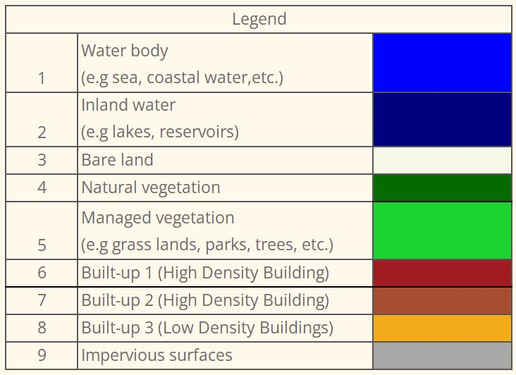

Methodology
Here is an overview of our workflow for our accuracy assessment for both Landsat 8 and Sentinel-2
Task 1: Selection of Study Area
We chose Singapore as our primary area of study as our team felt more familiar with the identification of land covers in our local country. We ventured around Singapore to find areas suitable for land classification. Through Open Street Map and Google Maps, we compared between different parts of Singapore (Figure 1.1) and found that the North of Singapore has an abundance of green covers and water bodies that can be further classified (Figure 1.2).
With that, we decided to focus on North of Singapore due to its wide variety of land classifications.


Task 2: Data Collection
We first gather the satellite imagery data from Landsat 8 from EarthExplorer and Sentinel-2 from Copernicus Open Access Hub. The selection of both satellite imagery was influenced by the study area selection, and we looked out for higher quality image (e.g limited or low cloud cover). All data sets are geo-referenced to WGS_84 as it was the pre-defined CRS (Coordinate Reference System) for them.
Landsat 8

Here are some of the potential data sets (Figure 2.1) that we have chosen to work with. However, as we can see from Figure 2.2 , there are some imagery that has massive cloud cover around Singapore. Hence we eliminate them and chose 20180524 scene data.

Sentinel-2
After obtaining Landsat 8 remote sensing data, we then proceed to narrow down our search for an appropriate scenes in Sentinel-2.
We observed that there majority of the scenes in 2018 were not useful due to the large cloud cover (Figure 2.3),which may obstruct our view during analysis. Hence we decided to look into 2019 and 2020 and selected the 20200126 scene to conduct further analysis.

Task 3 : Image Pre-processing
Under Landsat8, we decided to use bands 1-7 as they have the same spatial resolution of 30m. Similarly, we decided to use bands 2,3,4,8 for Sentinel 2, as they have the same spatial resolution of 10m (Figure 3.1).

We then create band set as such to point to the respective wavelength based on the bands that we have.

From there, we then utilized the band sets to experiment with different combination of color-composites (Figure 3.3 - 3.6) to help us have a better view and better identification of the individual land classification (e.g vegetation, land, water bodies).


Task 4 : Supervised Classification
In this study, our team only performed supervised classification. According to Guide to GIS and Image Processing,1
“the user develops the spectral signatures of known categories, such as urban and forest, and then the software assigns each pixel in the image to the cover type to which its signature is most comparable”
We felt that supervised classification would be able to help us perform an controlled quantitative analyses of remote sensing image data.
Training Sites
Here are our 9 classes that we have defined.

Using the SCP Plugin, we defined the areas that will be used as training sites to create the ROIs (Regions of Interest) and spectral signatures required for the classification of a band set.

Spectural Signature Plot
Spectural Signature includes several functions for displaying spectral signature values as a function of wavelength(defined in the band set). If common classifications are too near to the extent that they overlap, it will be hard differentiate the different classes(e.g managed vegetation, natural vegetation)

Supervised Classification
Through various experiments and testing, we compared both the maximum likelihood and minimum distance analysis and decided to use maximum likelihood as it yielded higher accuracy as compared to minimum distance.
Based on the algorithm, each of the pixels will be assigned to the class that has the highest probability, which is the maximum likelihood.
Accuracy Assessment
With the test samples classified, we will then created another set of train samples, to test the accuracy of the classification. More details can be viewed under Analysis.
Footnotes
Eastman, J.R. (2003) Guide to GIS and Image Processing 14, 239-247. Clark University Manual, USA.↩︎